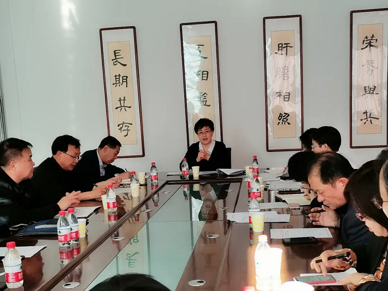

11月1日，农工党赤峰市委主委、市政府副市长李艳茹主持召开农工党赤峰市委六届十九次全委（扩大）会议，市委委员及部委负责人参加。
会议第一时间传达学习了中国共产党第十九届中央委员会第五次全体会议精神，学习中国农工民主党成立90周年暨农工党内蒙古区委会成立35周年纪念大会会议精神，学习习近平总书记在纪念中国人民志愿军抗美援朝出国作战70周年大会上的重要讲话，通报调研报告进展情况，研究确定有关信息保密、党刊征订等工作，安排部署下一阶段重点工作。
会议指出，中国共产党十九届四中全会以来，以习近平同志为核心的中共中央团结带领全国各族人民砥砺奋进，推动各项事业取得新的重大成就。在“两个一百年”奋斗目标的历史交汇点上，五中全会发出了夺取全面建设社会主义现代化国家新胜利的动员令。农工党市委各级党组织和全体党员要把学习贯彻五中全会精神作为当前和今后一个时期的重大政治任务，深入学习、深刻领会五中全会精神，切实把思想和行动统一到五中全会精神上来，做好农工党各项重点工作。要贯彻落实好中国农工民主党成立90周年暨农工党内蒙古区委会成立35周年纪念大会会议精神，不断加强自身建设，全面提升履职服务水平，在疫情防控、生态建设等方面继续发挥界别优势。要巩固深化“不忘合作初心，继续携手前进”主题教育活动成果，发挥优势特长，开展好党史编纂、健康视频讲座、“全体党员下基层”等工作。